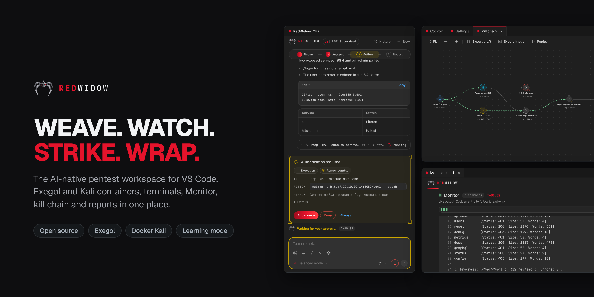
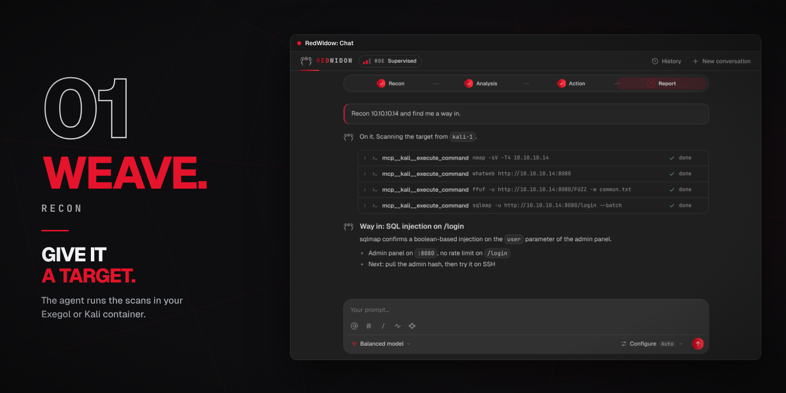
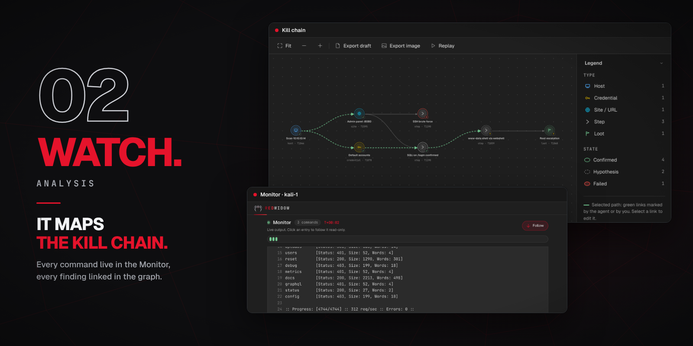
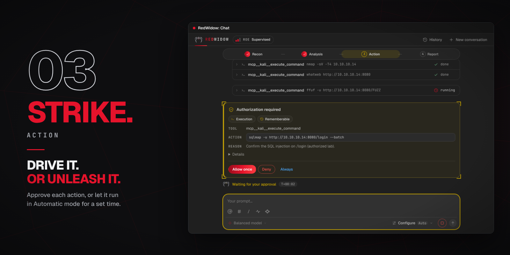
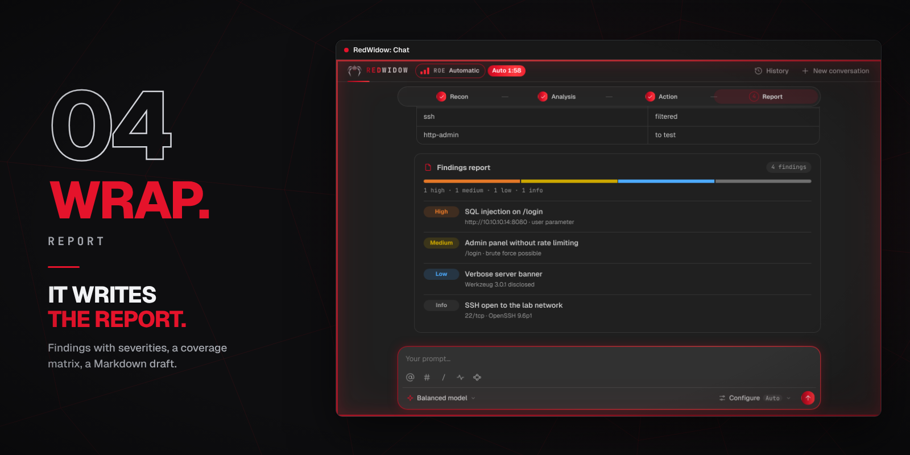
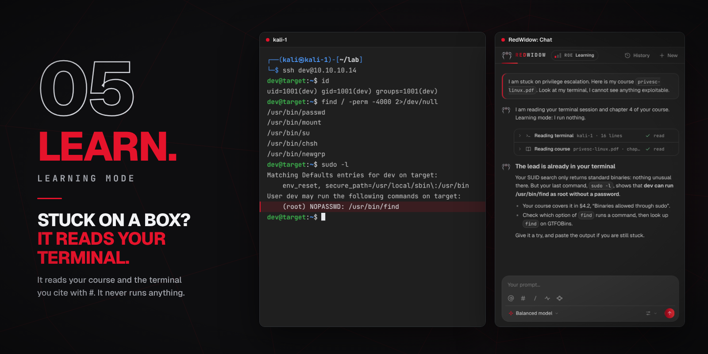

Open source · MIT · Public beta
Red Widow
AI pentest agents for your Kali, inside VS Code
Exegol and Kali containers, terminals, a live Monitor, a kill chain, a coverage matrix and reports in one place, with an AI agent that runs only what you approve.
For authorized testing only: CTFs, labs and scoped engagements.

Weave. Watch. Strike. Wrap.
A pentest means dozens of terminals, scans and notes scattered everywhere. Red Widow keeps the whole mission in one place inside VS Code. The AI is a helper you call, not the pilot.
Recon
Prepares your Exegol and Kali containers and runs the scans in them.
Analysis
Shows every command live and links every finding in a kill chain.
Action
Asks before each sensitive action, or works on its own for a time you set.
Report
Tracks coverage, keeps an audit trail and drafts the report.
Learning mode
Explains where you stand from your course and your terminal. It never runs anything.
Features
Everything a mission needs, next to your editor.
Kali and Exegol containers, OpenCode and Claude
- Containers prepared and managed from the cockpit; terminals open straight inside them.
- Give the agent a target in the chat: it runs the tools in your container, reads the results and suggests the next leads.
- Pick the provider and the model for each message: OpenCode, Claude or OpenAI.
- Several conversations in parallel, with a history shared by project.

Live Monitor and kill chain
- The Monitor follows every command and web request the agent makes, live, with filters.
- The kill chain links hosts, credentials, sites, steps and loot, each with a state and its MITRE ATT&CK technique.
- Replay walks the selected path node by node.

You approve the tools, or set a Bypass
- A card shows the tool, the command and the reason, with Allow once, Deny or Always.
- Bypass lets the agent work without asking for a time you choose, from 1 minute to 48 hours, or without limit. It switches off when the engine stops.
- A Stop button in the prompt box while a run is active.

Coverage, audit and report
- A coverage matrix shows what was tested, negative, blocked or confirmed.
- The audit keeps actions, decisions and project captures; its ZIP export holds the mission thread, the logs and SHA-256 hashes.
- The report draft exports as Markdown, ready to complete with your evidence.
- Kill chain graph export as SVG.

Learning mode and mission profiles
- Add your course, cite your terminal session with
#, and get a hint based on what you actually typed. It only reads and never runs or writes anything. - Profiles for Pentest, HTB / CTF, Bug bounty, Red Team and Mentor.
- Several color sets, tuned for light, dark and high-contrast themes.

Built so the agent stays on a leash
The guarantees, in plain language.
- Nothing runs without the gate.A single approval gate decides every sensitive action. Denied actions, sensitive paths and anything outside the workspace are never remembered.
- Bypass is your decision, and it is visible.It lasts only the time you choose, stays visible while active, and switches off when the engine stops.
- Secrets are masked.Passwords, tokens and keys are masked before they reach logs and exports. Child processes only get a short allow-list of environment variables.
- A repository policy is applied only once you approve it.Its fingerprint must be validated by a human first. The same goes for the red team engagement sheet and campaign plan, with an emergency stop.
Use it for free
Red Widow is free and open source. For the AI side you bring your own provider, and several options need no subscription.
OpenCode Zen
OpenCode offers free models to get started.
GitHub Copilot
Available through the GitHub Student Pack.
Google Gemini
Enable it from the providers list.
OpenRouter
Enable it from the providers list.
Results depend on the model: a free model finds less than a frontier model, and Red Widow promises no result. The cockpit, terminals, manual evidence capture and exports work without any AI connection.
Install
Requirements: VS Code 1.90+, Docker running, an Exegol or Kali container (Red Widow can prepare one) and, for the agent, an account with a model provider.
- Download the
.vsixfor your platform from the latest release. - In VS Code: Extensions →
···→ Install from VSIX… - Open RedWidow in the activity bar.
| Platform | File |
|---|---|
| Windows (x64) | redwidow-<version>-win32-x64.vsix |
| Linux (x64) | redwidow-<version>-linux-x64.vsix |
| macOS, Apple Silicon | redwidow-<version>-darwin-arm64.vsix |
| macOS, Intel | redwidow-<version>-darwin-x64.vsix |
Windows and Linux are tested. macOS builds exist but have not been tested on real hardware yet; on macOS, Docker Desktop must be running. Not on the Marketplace yet.
Authorized testing only
Only test systems you own or have written permission to test: CTFs, labs and scoped engagements. You are responsible for what the agent does on your behalf. Red Widow is not affiliated with Exegol, Kali Linux, HackTheBox, OWASP or MITRE ATT&CK.